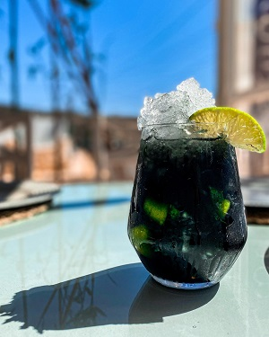

Caipirinha Black
Caipirinha Black é uma bebida feita com Vodka Preta. A Vodka é elaborada em um processo especial de destilação e tripla filtragem, contendo a erva asiática chamada Catechu, que também é emagrecedora, usada para dar coloração preta ao líquido, sem alterar seu sabor. Devido sua cor, é uma bebida única para elaboração de drinks.